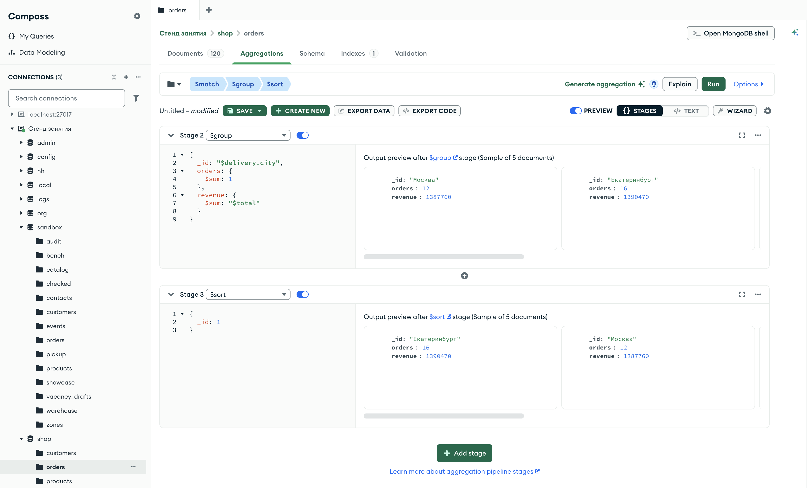

Справочник по MongoDB · модуль 4 · конвейер агрегации
4.4
$group
и аккумуляторы
В этой главе разобрана стадия $group. Она раскладывает документы потока по группам с одинаковым ключом и выпускает по одному документу на группу. Значения итогового документа считают аккумуляторы: $sum складывает и считает, $avg находит среднее, $min и $max — наименьшее и наибольшее. Отдельно разобраны ключ из двух полей, одна группа на все документы и место стадии $match до и после группировки.
- Категория
- Агрегация
- Уровень
- Начальный
- Связанные темы
- Конвейер (глава 4.1), выражения и $project (глава 4.2), $addFields (глава 4.3)
- Зачем это знать
- Считать итоги по группам — выручку по городам, число заказов, средний чек — на сервере, одним запросом
Как запускать примеры этой главы
mongodb-glava-4.4-python.zip, 64 КБmongodb-glava-4.4-ruby.zip, 63 КБmongodb-glava-4.4-go.zip, 70 КБmongodb-glava-4.4-cpp.zip, 70 КБ — все примеры главы готовыми программами, базы и стенд в Docker. В README.md — запуск в Docker, если Compass нет или он не подключается, и на установленном сервере с Compass, а также что должна напечатать каждая программа.lessons/ch4_4.py — пример вставляется в конец файлаlessons/ch4_4.rb — пример вставляется в конец файлаlessons/ch4_4.go — пример внутрь скобок в конце main, функции и типы — выше mainlessons/ch4_4.cpp — пример внутрь скобок в конце main, функции — выше maincd lessons, затем python ch4_4.pycd lessons, затем python3 ch4_4.py · в Docker: docker compose run --rm python lessons/ch4_4.pycd lessons, затем ruby ch4_4.rb · в Docker: docker compose run --rm ruby lessons/ch4_4.rbcd lessons, затем go run ch4_4.go · в Docker: docker compose run --rm go lessons/ch4_4.gocd lessons, затем g++ -std=c++17 ch4_4.cpp -o prog $(pkg-config --cflags --libs libmongocxx1) && ./prog · в Docker: docker compose run --rm cpp lessons/ch4_4.cpp§1Стадия $group
Стадии глав 4.1–4.3 работали с каждым документом отдельно: отбирали, упорядочивали, меняли форму. Отчёту руководителя нужны итоги: сколько заказов доставлено в каждый город и на какую сумму. Такой итог складывается из многих документов сразу. Его считает стадия $group.
Кассир в конце дня раскладывает чеки по стопкам — по отделам магазина. На каждую стопку он кладёт листок: «отдел обуви, чеков 34, сумма 186 000». Отдельные чеки в отчёт не идут, в отчёт идут листки, по одному на отдел.
Стадия $group раскладывает документы потока по группам и выпускает по одному документу на каждую группу. В одну группу попадают документы с одинаковым ключом группировки. Ключ задаётся полем _id в параметре стадии: "_id": "$delivery.city" — группа на каждый город доставки. Остальные поля параметра — итоги группы. Каждый итог считает аккумулятор — оператор, который проходит по всем документам группы и копит результат.
Первый аккумулятор — $sum. Запись {"$sum": "$total"} складывает суммы заказов группы. Запись {"$sum": 1} прибавляет единицу за каждый документ, то есть считает документы. Кассир делает то же: щёлкает счётчиком на каждый чек и складывает суммы на калькуляторе.
Пример считает доставленные заказы и выручку по каждому городу. Порядок групп на выходе $group не задан, поэтому после неё стоит $sort по названию города.
У стадии $group в mongocxx::pipeline есть свой метод — group, параметр — документ группировки.
pipeline = [
{"$match": {"status": "доставлен"}},
{"$group": {
"_id": "$delivery.city",
"orders": {"$sum": 1},
"revenue": {"$sum": "$total"},
}},
{"$sort": {"_id": 1}},
]
for doc in orders.aggregate(pipeline):
print(doc)
mongocxx::pipeline pipeline; pipeline.match(make_document(kvp("status", "доставлен"))); pipeline.group(make_document( kvp("_id", "$delivery.city"), kvp("orders", make_document(kvp("$sum", 1))), kvp("revenue", make_document(kvp("$sum", "$total"))))); pipeline.sort(make_document(kvp("_id", 1))); for (auto&& doc : orders.aggregate(pipeline)) { std::cout << bsoncxx::to_json(doc, bsoncxx::ExtendedJsonMode::k_relaxed) << std::endl; }
pipeline := mongo.Pipeline{
{{Key: "$match", Value: bson.D{{Key: "status", Value: "доставлен"}}}},
{{Key: "$group", Value: bson.D{
{Key: "_id", Value: "$delivery.city"},
{Key: "orders", Value: bson.D{{Key: "$sum", Value: 1}}},
{Key: "revenue", Value: bson.D{{Key: "$sum", Value: "$total"}}}}}},
{{Key: "$sort", Value: bson.D{{Key: "_id", Value: 1}}}},
}
cursor, _ := orders.Aggregate(ctx, pipeline)
for cursor.Next(ctx) {
var doc bson.D
cursor.Decode(&doc)
out, _ := bson.MarshalExtJSON(doc, false, false)
fmt.Println(string(out))
}
pipeline = [
{ "$match" => { "status" => "доставлен" } },
{ "$group" => {
"_id" => "$delivery.city",
"orders" => { "$sum" => 1 },
"revenue" => { "$sum" => "$total" },
} },
{ "$sort" => { "_id" => 1 } },
]
orders.aggregate(pipeline).each { |doc| puts doc.inspect }
{'_id': 'Екатеринбург', 'orders': 16, 'revenue': 1390470}
{'_id': 'Москва', 'orders': 12, 'revenue': 1387760}
{'_id': 'Новосибирск', 'orders': 17, 'revenue': 2536840}
{'_id': 'Санкт-Петербург', 'orders': 10, 'revenue': 1169540}
{'_id': 'Ярославль', 'orders': 14, 'revenue': 2048020}
{ "_id" : "Екатеринбург", "orders" : 16, "revenue" : 1390470 }
{ "_id" : "Москва", "orders" : 12, "revenue" : 1387760 }
{ "_id" : "Новосибирск", "orders" : 17, "revenue" : 2536840 }
{ "_id" : "Санкт-Петербург", "orders" : 10, "revenue" : 1169540 }
{ "_id" : "Ярославль", "orders" : 14, "revenue" : 2048020 }
{"_id":"Екатеринбург","orders":16,"revenue":1390470}
{"_id":"Москва","orders":12,"revenue":1387760}
{"_id":"Новосибирск","orders":17,"revenue":2536840}
{"_id":"Санкт-Петербург","orders":10,"revenue":1169540}
{"_id":"Ярославль","orders":14,"revenue":2048020}
{"_id"=>"Екатеринбург", "orders"=>16, "revenue"=>1390470}
{"_id"=>"Москва", "orders"=>12, "revenue"=>1387760}
{"_id"=>"Новосибирск", "orders"=>17, "revenue"=>2536840}
{"_id"=>"Санкт-Петербург", "orders"=>10, "revenue"=>1169540}
{"_id"=>"Ярославль", "orders"=>14, "revenue"=>2048020}
Из 69 доставленных заказов получилось пять документов, по одному на город. В поле _id каждого стоит город, в orders — число заказов, в revenue — их общая сумма. Больше всего выручки у Новосибирска: 17 заказов на 2 536 840.
Строка — один документ результата: город и число заказов слева, выручка справа. Длина полосы пропорциональна выручке. Всего 16 + 12 + 17 + 10 + 14 = 69 заказов: каждый доставленный заказ попал ровно в одну группу.
У документов результата нет полей заказов: номера, позиций, оплаты. Документ группы содержит только ключ и итоги, как листок кассира содержит только отдел, число чеков и сумму. Ключ может быть и одним на все документы.
§2Одна группа на все документы
Для итога за весь день кассир складывает все чеки в одну стопку. В конвейере для этого ключ должен быть одинаковым у всех документов.
Значение "_id": null даёт всем документам один и тот же ключ, и группа получается одна. Пример считает число и сумму всех доставленных заказов.
Значение null в Python записывается как None.
Значение null в Ruby записывается как nil.
Значение null в Go записывается как nil: {Key: "_id", Value: nil}.
Значение null в bsoncxx записывается объектом bsoncxx::types::b_null{}.
pipeline = [
{"$match": {"status": "доставлен"}},
{"$group": {"_id": None, "orders": {"$sum": 1}, "revenue": {"$sum": "$total"}}},
]
for doc in orders.aggregate(pipeline):
print(doc)
mongocxx::pipeline pipeline; pipeline.match(make_document(kvp("status", "доставлен"))); pipeline.group(make_document( kvp("_id", bsoncxx::types::b_null{}), kvp("orders", make_document(kvp("$sum", 1))), kvp("revenue", make_document(kvp("$sum", "$total"))))); for (auto&& doc : orders.aggregate(pipeline)) { std::cout << bsoncxx::to_json(doc, bsoncxx::ExtendedJsonMode::k_relaxed) << std::endl; }
pipeline := mongo.Pipeline{
{{Key: "$match", Value: bson.D{{Key: "status", Value: "доставлен"}}}},
{{Key: "$group", Value: bson.D{
{Key: "_id", Value: nil},
{Key: "orders", Value: bson.D{{Key: "$sum", Value: 1}}},
{Key: "revenue", Value: bson.D{{Key: "$sum", Value: "$total"}}}}}},
}
cursor, _ := orders.Aggregate(ctx, pipeline)
for cursor.Next(ctx) {
var doc bson.D
cursor.Decode(&doc)
out, _ := bson.MarshalExtJSON(doc, false, false)
fmt.Println(string(out))
}
pipeline = [
{ "$match" => { "status" => "доставлен" } },
{ "$group" => {
"_id" => nil,
"orders" => { "$sum" => 1 },
"revenue" => { "$sum" => "$total" },
} },
]
orders.aggregate(pipeline).each { |doc| puts doc.inspect }
{'_id': None, 'orders': 69, 'revenue': 8532630}
{ "_id" : null, "orders" : 69, "revenue" : 8532630 }
{"_id":null,"orders":69,"revenue":8532630}
{"_id"=>nil, "orders"=>69, "revenue"=>8532630}
Результат — один документ: 69 заказов на 8 532 630. Это сумма пяти городских групп из §1: 1 390 470 + 1 387 760 + 2 536 840 + 1 169 540 + 2 048 020 = 8 532 630.
orders: 69, revenue: 8532630§2Слева ключ разный у заказов разных городов, справа один у всех. Число документов на выходе $group равно числу разных значений ключа.
Сумма и число — не единственные итоги, которые нужны отчёту. Следующие аккумуляторы находят среднее и крайние значения.
§3$avg, $min и $max
В журнале группы у каждого студента три числа по предмету: средний балл, худшая оценка и лучшая. Все три считаются по одному и тому же столбцу оценок.
Аккумулятор $avg находит среднее значение поля по группе, $min — наименьшее, $max — наибольшее. Запись та же, что у $sum: {"$avg": "$total"}. Среднее обычно получается дробным с длинным хвостом цифр, поэтому пример после группировки округляет его стадией $project и оператором $round. Его аргументы — число и количество знаков после запятой: {"$round": ["$avg", 0]} округляет до целого.
pipeline = [
{"$match": {"status": "доставлен"}},
{"$group": {
"_id": "$delivery.city",
"avg": {"$avg": "$total"},
"min": {"$min": "$total"},
"max": {"$max": "$total"},
}},
{"$project": {"avg": {"$round": ["$avg", 0]}, "min": 1, "max": 1}},
{"$sort": {"_id": 1}},
]
for doc in orders.aggregate(pipeline):
print(doc)
mongocxx::pipeline pipeline; pipeline.match(make_document(kvp("status", "доставлен"))); pipeline.group(make_document( kvp("_id", "$delivery.city"), kvp("avg", make_document(kvp("$avg", "$total"))), kvp("min", make_document(kvp("$min", "$total"))), kvp("max", make_document(kvp("$max", "$total"))))); pipeline.project(make_document( kvp("avg", make_document(kvp("$round", make_array("$avg", 0)))), kvp("min", 1), kvp("max", 1))); pipeline.sort(make_document(kvp("_id", 1))); for (auto&& doc : orders.aggregate(pipeline)) { std::cout << bsoncxx::to_json(doc, bsoncxx::ExtendedJsonMode::k_relaxed) << std::endl; }
pipeline := mongo.Pipeline{
{{Key: "$match", Value: bson.D{{Key: "status", Value: "доставлен"}}}},
{{Key: "$group", Value: bson.D{
{Key: "_id", Value: "$delivery.city"},
{Key: "avg", Value: bson.D{{Key: "$avg", Value: "$total"}}},
{Key: "min", Value: bson.D{{Key: "$min", Value: "$total"}}},
{Key: "max", Value: bson.D{{Key: "$max", Value: "$total"}}}}}},
{{Key: "$project", Value: bson.D{
{Key: "avg", Value: bson.D{{Key: "$round", Value: bson.A{"$avg", 0}}}},
{Key: "min", Value: 1},
{Key: "max", Value: 1}}}},
{{Key: "$sort", Value: bson.D{{Key: "_id", Value: 1}}}},
}
cursor, _ := orders.Aggregate(ctx, pipeline)
for cursor.Next(ctx) {
var doc bson.D
cursor.Decode(&doc)
out, _ := bson.MarshalExtJSON(doc, false, false)
fmt.Println(string(out))
}
pipeline = [
{ "$match" => { "status" => "доставлен" } },
{ "$group" => {
"_id" => "$delivery.city",
"avg" => { "$avg" => "$total" },
"min" => { "$min" => "$total" },
"max" => { "$max" => "$total" },
} },
{ "$project" => { "avg" => { "$round" => ["$avg", 0] }, "min" => 1, "max" => 1 } },
{ "$sort" => { "_id" => 1 } },
]
orders.aggregate(pipeline).each { |doc| puts doc.inspect }
{'_id': 'Екатеринбург', 'min': 2370, 'max': 295960, 'avg': 86904.0}
{'_id': 'Москва', 'min': 13560, 'max': 289360, 'avg': 115647.0}
{'_id': 'Новосибирск', 'min': 2370, 'max': 354960, 'avg': 149226.0}
{'_id': 'Санкт-Петербург', 'min': 16980, 'max': 320740, 'avg': 116954.0}
{'_id': 'Ярославль', 'min': 5980, 'max': 392660, 'avg': 146287.0}
{ "_id" : "Екатеринбург", "min" : 2370, "max" : 295960, "avg" : 86904.0 }
{ "_id" : "Москва", "min" : 13560, "max" : 289360, "avg" : 115647.0 }
{ "_id" : "Новосибирск", "min" : 2370, "max" : 354960, "avg" : 149226.0 }
{ "_id" : "Санкт-Петербург", "min" : 16980, "max" : 320740, "avg" : 116954.0 }
{ "_id" : "Ярославль", "min" : 5980, "max" : 392660, "avg" : 146287.0 }
{"_id":"Екатеринбург","min":2370,"max":295960,"avg":86904.0}
{"_id":"Москва","min":13560,"max":289360,"avg":115647.0}
{"_id":"Новосибирск","min":2370,"max":354960,"avg":149226.0}
{"_id":"Санкт-Петербург","min":16980,"max":320740,"avg":116954.0}
{"_id":"Ярославль","min":5980,"max":392660,"avg":146287.0}
{"_id"=>"Екатеринбург", "min"=>2370, "max"=>295960, "avg"=>86904.0}
{"_id"=>"Москва", "min"=>13560, "max"=>289360, "avg"=>115647.0}
{"_id"=>"Новосибирск", "min"=>2370, "max"=>354960, "avg"=>149226.0}
{"_id"=>"Санкт-Петербург", "min"=>16980, "max"=>320740, "avg"=>116954.0}
{"_id"=>"Ярославль", "min"=>5980, "max"=>392660, "avg"=>146287.0}
Средний чек выше всего в Новосибирске — 149 226, самый крупный заказ — 392 660 в Ярославле. Самый мелкий, 2 370, есть и в Екатеринбурге, и в Новосибирске. На схеме у каждого города полоса от самого мелкого заказа до самого крупного.
Под названием города — min, avg и max из вывода примера. Полоса начинается на min и кончается на max, тёмная черта — avg. У всех городов среднее ближе к левому краю: крупных заказов мало, и они растягивают полосу вправо.
Стадия $project после $group работает с документами групп: в ней доступны поля _id, avg, min и max, а поля заказов уже нет. В выводе avg стоит последним: проекция вычисляет его заново, а min и max только включает значением 1. Такой порядок полей разобран в главе 4.2, §3. Ключ группы до этого места был одним полем. Он может состоять и из нескольких.
§4Ключ из двух полей
Кассир может разложить чеки сначала по отделам, а внутри отдела — по продавцам. Тогда стопок больше: по одной на каждую пару «отдел и продавец», которая встретилась в чеках.
Ключ группировки может быть документом из нескольких полей: "_id": {"city": "$delivery.city", "type": "$delivery.type"}. В одну группу попадают заказы, у которых совпадают оба поля. Пример считает доставленные заказы Москвы и Ярославля по городу и способу доставки.
pipeline = [
{"$match": {
"status": "доставлен",
"delivery.city": {"$in": ["Москва", "Ярославль"]},
}},
{"$group": {
"_id": {"city": "$delivery.city", "type": "$delivery.type"},
"orders": {"$sum": 1},
"revenue": {"$sum": "$total"},
}},
{"$sort": {"_id.city": 1, "_id.type": 1}},
]
for doc in orders.aggregate(pipeline):
print(doc)
mongocxx::pipeline pipeline; pipeline.match(make_document( kvp("status", "доставлен"), kvp("delivery.city", make_document(kvp("$in", make_array("Москва", "Ярославль")))))); pipeline.group(make_document( kvp("_id", make_document(kvp("city", "$delivery.city"), kvp("type", "$delivery.type"))), kvp("orders", make_document(kvp("$sum", 1))), kvp("revenue", make_document(kvp("$sum", "$total"))))); pipeline.sort(make_document(kvp("_id.city", 1), kvp("_id.type", 1))); for (auto&& doc : orders.aggregate(pipeline)) { std::cout << bsoncxx::to_json(doc, bsoncxx::ExtendedJsonMode::k_relaxed) << std::endl; }
pipeline := mongo.Pipeline{
{{Key: "$match", Value: bson.D{
{Key: "status", Value: "доставлен"},
{Key: "delivery.city", Value: bson.D{{Key: "$in", Value: bson.A{"Москва", "Ярославль"}}}}}}},
{{Key: "$group", Value: bson.D{
{Key: "_id", Value: bson.D{
{Key: "city", Value: "$delivery.city"},
{Key: "type", Value: "$delivery.type"}}},
{Key: "orders", Value: bson.D{{Key: "$sum", Value: 1}}},
{Key: "revenue", Value: bson.D{{Key: "$sum", Value: "$total"}}}}}},
{{Key: "$sort", Value: bson.D{{Key: "_id.city", Value: 1}, {Key: "_id.type", Value: 1}}}},
}
cursor, _ := orders.Aggregate(ctx, pipeline)
for cursor.Next(ctx) {
var doc bson.D
cursor.Decode(&doc)
out, _ := bson.MarshalExtJSON(doc, false, false)
fmt.Println(string(out))
}
pipeline = [
{ "$match" => {
"status" => "доставлен",
"delivery.city" => { "$in" => ["Москва", "Ярославль"] },
} },
{ "$group" => {
"_id" => { "city" => "$delivery.city", "type" => "$delivery.type" },
"orders" => { "$sum" => 1 },
"revenue" => { "$sum" => "$total" },
} },
{ "$sort" => { "_id.city" => 1, "_id.type" => 1 } },
]
orders.aggregate(pipeline).each { |doc| puts doc.inspect }
{'_id': {'city': 'Москва', 'type': 'курьер'}, 'orders': 4, 'revenue': 713970}
{'_id': {'city': 'Москва', 'type': 'почта'}, 'orders': 1, 'revenue': 13560}
{'_id': {'city': 'Москва', 'type': 'пункт выдачи'}, 'orders': 7, 'revenue': 660230}
{'_id': {'city': 'Ярославль', 'type': 'курьер'}, 'orders': 2, 'revenue': 212340}
{'_id': {'city': 'Ярославль', 'type': 'почта'}, 'orders': 3, 'revenue': 316870}
{'_id': {'city': 'Ярославль', 'type': 'пункт выдачи'}, 'orders': 9, 'revenue': 1518810}
{ "_id" : { "city" : "Москва", "type" : "курьер" }, "orders" : 4, "revenue" : 713970 }
{ "_id" : { "city" : "Москва", "type" : "почта" }, "orders" : 1, "revenue" : 13560 }
{ "_id" : { "city" : "Москва", "type" : "пункт выдачи" }, "orders" : 7, "revenue" : 660230 }
{ "_id" : { "city" : "Ярославль", "type" : "курьер" }, "orders" : 2, "revenue" : 212340 }
{ "_id" : { "city" : "Ярославль", "type" : "почта" }, "orders" : 3, "revenue" : 316870 }
{ "_id" : { "city" : "Ярославль", "type" : "пункт выдачи" }, "orders" : 9, "revenue" : 1518810 }
{"_id":{"city":"Москва","type":"курьер"},"orders":4,"revenue":713970}
{"_id":{"city":"Москва","type":"почта"},"orders":1,"revenue":13560}
{"_id":{"city":"Москва","type":"пункт выдачи"},"orders":7,"revenue":660230}
{"_id":{"city":"Ярославль","type":"курьер"},"orders":2,"revenue":212340}
{"_id":{"city":"Ярославль","type":"почта"},"orders":3,"revenue":316870}
{"_id":{"city":"Ярославль","type":"пункт выдачи"},"orders":9,"revenue":1518810}
{"_id"=>{"city"=>"Москва", "type"=>"курьер"}, "orders"=>4, "revenue"=>713970}
{"_id"=>{"city"=>"Москва", "type"=>"почта"}, "orders"=>1, "revenue"=>13560}
{"_id"=>{"city"=>"Москва", "type"=>"пункт выдачи"}, "orders"=>7, "revenue"=>660230}
{"_id"=>{"city"=>"Ярославль", "type"=>"курьер"}, "orders"=>2, "revenue"=>212340}
{"_id"=>{"city"=>"Ярославль", "type"=>"почта"}, "orders"=>3, "revenue"=>316870}
{"_id"=>{"city"=>"Ярославль", "type"=>"пункт выдачи"}, "orders"=>9, "revenue"=>1518810}
Получилось шесть групп: два города на три способа доставки. Поле _id у каждой — документ с двумя полями, и сортировка идёт по ним через точку: "_id.city", затем "_id.type". На схеме те же шесть документов показаны таблицей.
| курьер | почта | пункт выдачи | |
|---|---|---|---|
| Москва | 4 · 713970 | 1 · 13560 | 7 · 660230 |
| Ярославль | 2 · 212340 | 3 · 316870 | 9 · 1518810 |
Клетка таблицы — один документ результата, его _id — пара «город, способ». В обоих городах больше всего заказов забирают в пунктах выдачи.
Во всех примерах до этого места перед $group стояла стадия $match с доставленными заказами. Без неё итог другой.
§5$match до $group
Перед тем как считать выручку дня, кассир откладывает чеки возвратов: деньги по ним вернули покупателям. Если их не отложить, выручка получится больше настоящей.
Стадия $match перед $group определяет, какие документы попадут в группы. Пример считает выручку по городам дважды: по всем заказам и только по доставленным.
all_orders = [
{"$group": {"_id": "$delivery.city", "revenue": {"$sum": "$total"}}},
{"$sort": {"_id": 1}},
]
only_delivered = [
{"$match": {"status": "доставлен"}},
{"$group": {"_id": "$delivery.city", "revenue": {"$sum": "$total"}}},
{"$sort": {"_id": 1}},
]
print("── все заказы")
for doc in orders.aggregate(all_orders):
print(doc)
print("── только доставленные")
for doc in orders.aggregate(only_delivered):
print(doc)
mongocxx::pipeline all_orders; all_orders.group(make_document( kvp("_id", "$delivery.city"), kvp("revenue", make_document(kvp("$sum", "$total"))))); all_orders.sort(make_document(kvp("_id", 1))); mongocxx::pipeline only_delivered; only_delivered.match(make_document(kvp("status", "доставлен"))); only_delivered.group(make_document( kvp("_id", "$delivery.city"), kvp("revenue", make_document(kvp("$sum", "$total"))))); only_delivered.sort(make_document(kvp("_id", 1))); std::cout << "── все заказы" << std::endl; for (auto&& doc : orders.aggregate(all_orders)) { std::cout << bsoncxx::to_json(doc, bsoncxx::ExtendedJsonMode::k_relaxed) << std::endl; } std::cout << "── только доставленные" << std::endl; for (auto&& doc : orders.aggregate(only_delivered)) { std::cout << bsoncxx::to_json(doc, bsoncxx::ExtendedJsonMode::k_relaxed) << std::endl; }
allOrders := mongo.Pipeline{
{{Key: "$group", Value: bson.D{
{Key: "_id", Value: "$delivery.city"},
{Key: "revenue", Value: bson.D{{Key: "$sum", Value: "$total"}}}}}},
{{Key: "$sort", Value: bson.D{{Key: "_id", Value: 1}}}},
}
onlyDelivered := mongo.Pipeline{
{{Key: "$match", Value: bson.D{{Key: "status", Value: "доставлен"}}}},
{{Key: "$group", Value: bson.D{
{Key: "_id", Value: "$delivery.city"},
{Key: "revenue", Value: bson.D{{Key: "$sum", Value: "$total"}}}}}},
{{Key: "$sort", Value: bson.D{{Key: "_id", Value: 1}}}},
}
fmt.Println("── все заказы")
cursor, _ := orders.Aggregate(ctx, allOrders)
for cursor.Next(ctx) {
var doc bson.D
cursor.Decode(&doc)
out, _ := bson.MarshalExtJSON(doc, false, false)
fmt.Println(string(out))
}
fmt.Println("── только доставленные")
cursor, _ = orders.Aggregate(ctx, onlyDelivered)
for cursor.Next(ctx) {
var doc bson.D
cursor.Decode(&doc)
out, _ := bson.MarshalExtJSON(doc, false, false)
fmt.Println(string(out))
}
all_orders = [
{ "$group" => { "_id" => "$delivery.city", "revenue" => { "$sum" => "$total" } } },
{ "$sort" => { "_id" => 1 } },
]
only_delivered = [
{ "$match" => { "status" => "доставлен" } },
{ "$group" => { "_id" => "$delivery.city", "revenue" => { "$sum" => "$total" } } },
{ "$sort" => { "_id" => 1 } },
]
puts "── все заказы"
orders.aggregate(all_orders).each { |doc| puts doc.inspect }
puts "── только доставленные"
orders.aggregate(only_delivered).each { |doc| puts doc.inspect }
── все заказы
{'_id': 'Екатеринбург', 'revenue': 3618120}
{'_id': 'Москва', 'revenue': 2447770}
{'_id': 'Новосибирск', 'revenue': 4371990}
{'_id': 'Санкт-Петербург', 'revenue': 1975570}
{'_id': 'Ярославль', 'revenue': 2972860}
── только доставленные
{'_id': 'Екатеринбург', 'revenue': 1390470}
{'_id': 'Москва', 'revenue': 1387760}
{'_id': 'Новосибирск', 'revenue': 2536840}
{'_id': 'Санкт-Петербург', 'revenue': 1169540}
{'_id': 'Ярославль', 'revenue': 2048020}
── все заказы
{ "_id" : "Екатеринбург", "revenue" : 3618120 }
{ "_id" : "Москва", "revenue" : 2447770 }
{ "_id" : "Новосибирск", "revenue" : 4371990 }
{ "_id" : "Санкт-Петербург", "revenue" : 1975570 }
{ "_id" : "Ярославль", "revenue" : 2972860 }
── только доставленные
{ "_id" : "Екатеринбург", "revenue" : 1390470 }
{ "_id" : "Москва", "revenue" : 1387760 }
{ "_id" : "Новосибирск", "revenue" : 2536840 }
{ "_id" : "Санкт-Петербург", "revenue" : 1169540 }
{ "_id" : "Ярославль", "revenue" : 2048020 }
── все заказы
{"_id":"Екатеринбург","revenue":3618120}
{"_id":"Москва","revenue":2447770}
{"_id":"Новосибирск","revenue":4371990}
{"_id":"Санкт-Петербург","revenue":1975570}
{"_id":"Ярославль","revenue":2972860}
── только доставленные
{"_id":"Екатеринбург","revenue":1390470}
{"_id":"Москва","revenue":1387760}
{"_id":"Новосибирск","revenue":2536840}
{"_id":"Санкт-Петербург","revenue":1169540}
{"_id":"Ярославль","revenue":2048020}
── все заказы
{"_id"=>"Екатеринбург", "revenue"=>3618120}
{"_id"=>"Москва", "revenue"=>2447770}
{"_id"=>"Новосибирск", "revenue"=>4371990}
{"_id"=>"Санкт-Петербург", "revenue"=>1975570}
{"_id"=>"Ярославль", "revenue"=>2972860}
── только доставленные
{"_id"=>"Екатеринбург", "revenue"=>1390470}
{"_id"=>"Москва", "revenue"=>1387760}
{"_id"=>"Новосибирск", "revenue"=>2536840}
{"_id"=>"Санкт-Петербург", "revenue"=>1169540}
{"_id"=>"Ярославль", "revenue"=>2048020}
По всем заказам выручка Новосибирска — 4 371 990, по доставленным — 2 536 840. В первый итог попали отменённые заказы, заказы в пути и те, что ещё собираются. Для отчёта о полученных деньгах нужен второй.
Три города из пяти; серая полоса — выручка по всем заказам, зелёная — по доставленным. У Екатеринбурга разница больше всего: из 3 618 120 доставлено 1 390 470.
$match до $group отбирает документы. Стадия $match может стоять и после группировки, и тогда она отбирает уже группы.
§6$match после $group
Из стопок с листками руководитель берёт только те, где сумма больше двух миллионов. Отбор идёт по листкам, отдельные чеки в нём не участвуют.
После $group в потоке документы групп. Стадия $match после неё проверяет поля этих документов — ключ и итоги. Пример оставляет города, где выручка доставленных заказов не меньше 2 000 000, и сортирует их по выручке.
pipeline = [
{"$match": {"status": "доставлен"}},
{"$group": {"_id": "$delivery.city", "revenue": {"$sum": "$total"}}},
{"$match": {"revenue": {"$gte": 2000000}}},
{"$sort": {"revenue": -1}},
]
for doc in orders.aggregate(pipeline):
print(doc)
mongocxx::pipeline pipeline; pipeline.match(make_document(kvp("status", "доставлен"))); pipeline.group(make_document( kvp("_id", "$delivery.city"), kvp("revenue", make_document(kvp("$sum", "$total"))))); pipeline.match(make_document(kvp("revenue", make_document(kvp("$gte", 2000000))))); pipeline.sort(make_document(kvp("revenue", -1))); for (auto&& doc : orders.aggregate(pipeline)) { std::cout << bsoncxx::to_json(doc, bsoncxx::ExtendedJsonMode::k_relaxed) << std::endl; }
pipeline := mongo.Pipeline{
{{Key: "$match", Value: bson.D{{Key: "status", Value: "доставлен"}}}},
{{Key: "$group", Value: bson.D{
{Key: "_id", Value: "$delivery.city"},
{Key: "revenue", Value: bson.D{{Key: "$sum", Value: "$total"}}}}}},
{{Key: "$match", Value: bson.D{{Key: "revenue", Value: bson.D{{Key: "$gte", Value: 2000000}}}}}},
{{Key: "$sort", Value: bson.D{{Key: "revenue", Value: -1}}}},
}
cursor, _ := orders.Aggregate(ctx, pipeline)
for cursor.Next(ctx) {
var doc bson.D
cursor.Decode(&doc)
out, _ := bson.MarshalExtJSON(doc, false, false)
fmt.Println(string(out))
}
pipeline = [
{ "$match" => { "status" => "доставлен" } },
{ "$group" => { "_id" => "$delivery.city", "revenue" => { "$sum" => "$total" } } },
{ "$match" => { "revenue" => { "$gte" => 2000000 } } },
{ "$sort" => { "revenue" => -1 } },
]
orders.aggregate(pipeline).each { |doc| puts doc.inspect }
{'_id': 'Новосибирск', 'revenue': 2536840}
{'_id': 'Ярославль', 'revenue': 2048020}
{ "_id" : "Новосибирск", "revenue" : 2536840 }
{ "_id" : "Ярославль", "revenue" : 2048020 }
{"_id":"Новосибирск","revenue":2536840}
{"_id":"Ярославль","revenue":2048020}
{"_id"=>"Новосибирск", "revenue"=>2536840}
{"_id"=>"Ярославль", "revenue"=>2048020}
Условию подходят два города: Новосибирск и Ярославль. Условие {"revenue": {"$gte": 2000000}} проверяет поле, которое появилось только в стадии $group. В языке SQL такое же различие есть между WHERE и HAVING: первое отбирает строки до группировки, второе — группы после неё.
Первая стадия $match отбирает заказы, вторая — группы. Стадия $group сокращает 69 документов до пяти.
Аккумуляторы до этого места получали числовое поле. Если поле окажется строковым, сервер не сообщит об ошибке.
§7Аккумулятор по строковому полю
Калькулятор, в который вместо цен вводят номера чеков с буквами, ничего не сложит. Аккумуляторы $sum и $avg работают так же: значения, которые не являются числами, они пропускают.
Пример ставит в оба аккумулятора поле number — номер заказа, строку вида «2026-0001».
pipeline = [
{"$group": {"_id": None, "sum": {"$sum": "$number"}, "avg": {"$avg": "$number"}}},
]
for doc in orders.aggregate(pipeline):
print(doc)
mongocxx::pipeline pipeline; pipeline.group(make_document( kvp("_id", bsoncxx::types::b_null{}), kvp("sum", make_document(kvp("$sum", "$number"))), kvp("avg", make_document(kvp("$avg", "$number"))))); for (auto&& doc : orders.aggregate(pipeline)) { std::cout << bsoncxx::to_json(doc, bsoncxx::ExtendedJsonMode::k_relaxed) << std::endl; }
pipeline := mongo.Pipeline{
{{Key: "$group", Value: bson.D{
{Key: "_id", Value: nil},
{Key: "sum", Value: bson.D{{Key: "$sum", Value: "$number"}}},
{Key: "avg", Value: bson.D{{Key: "$avg", Value: "$number"}}}}}},
}
cursor, _ := orders.Aggregate(ctx, pipeline)
for cursor.Next(ctx) {
var doc bson.D
cursor.Decode(&doc)
out, _ := bson.MarshalExtJSON(doc, false, false)
fmt.Println(string(out))
}
pipeline = [
{ "$group" => {
"_id" => nil,
"sum" => { "$sum" => "$number" },
"avg" => { "$avg" => "$number" },
} },
]
orders.aggregate(pipeline).each { |doc| puts doc.inspect }
{'_id': None, 'sum': 0, 'avg': None}
{ "_id" : null, "sum" : 0, "avg" : null }
{"_id":null,"sum":0,"avg":null}
{"_id"=>nil, "sum"=>0, "avg"=>nil}
Сумма равна 0, среднее — null: ни одного числа в группе не нашлось. Сервер выполнил стадию без ошибки. Поэтому нулевая сумма в отчёте — повод проверить тип поля, например на вкладке Schema в Compass.
| Аккумулятор | Значения в группе | Результат |
|---|---|---|
$sum | числа | сумма чисел |
$sum | только строки | 0 |
$avg | только строки | null |
$min, $max | строки | наименьшая и наибольшая строка при посимвольном сравнении |
Строковое поле в аккумуляторе ошибки не даёт. Ошибки дают две другие записи стадии.
§8Ошибки записи $group
У стадии $group два правила записи. Поле _id обязательно. Каждое другое поле параметра должно быть аккумулятором. Документ группы один, а документов в группе много, и у каждого своё значение поля. Аккумулятор задаёт, как из многих значений получить одно. Пример нарушает каждое правило по очереди.
На схеме — группа «Москва» из §1 и поле number. Без аккумулятора непонятно, какой из двенадцати номеров должен попасть в документ группы.
- 2026-0004 · 2026-0007 · 2026-0029
- 2026-0030 · 2026-0037 · 2026-0046
- 2026-0049 · 2026-0080 · 2026-0101
- 2026-0102 · 2026-0110 · 2026-0118
- "number": "$number" — какой из 12?
- "orders": {"$sum": 1} → 12
- "last": {"$max": "$number"} → 2026-0118
Красная строка — поле без аккумулятора, сервер его отклоняет. Зелёные — поля с аккумуляторами. Правило действует и для поля city, хотя у всех документов группы город одинаковый: сервер требует аккумулятор для каждого поля, кроме _id.
from pymongo.errors import OperationFailure no_accumulator = [ {"$group": {"_id": "$delivery.city", "city": "$delivery.city"}}, ] no_id = [ {"$group": {"orders": {"$sum": 1}}}, ] print("── поле без аккумулятора") try: for doc in orders.aggregate(no_accumulator): print(doc) except OperationFailure as e: print("код", e.code) print(e.details["errmsg"]) print("── группа без _id") try: for doc in orders.aggregate(no_id): print(doc) except OperationFailure as e: print("код", e.code) print(e.details["errmsg"])
mongocxx::pipeline no_accumulator; no_accumulator.group(make_document(kvp("_id", "$delivery.city"), kvp("city", "$delivery.city"))); mongocxx::pipeline no_id; no_id.group(make_document(kvp("orders", make_document(kvp("$sum", 1))))); std::cout << "── поле без аккумулятора" << std::endl; try { for (auto&& doc : orders.aggregate(no_accumulator)) { std::cout << bsoncxx::to_json(doc) << std::endl; } } catch (const mongocxx::operation_exception& e) { std::cout << "код " << e.code().value() << std::endl; std::cout << e.what() << std::endl; } std::cout << "── группа без _id" << std::endl; try { for (auto&& doc : orders.aggregate(no_id)) { std::cout << bsoncxx::to_json(doc) << std::endl; } } catch (const mongocxx::operation_exception& e) { std::cout << "код " << e.code().value() << std::endl; std::cout << e.what() << std::endl; }
noAccumulator := mongo.Pipeline{
{{Key: "$group", Value: bson.D{
{Key: "_id", Value: "$delivery.city"},
{Key: "city", Value: "$delivery.city"}}}},
}
noId := mongo.Pipeline{
{{Key: "$group", Value: bson.D{{Key: "orders", Value: bson.D{{Key: "$sum", Value: 1}}}}}},
}
fmt.Println("── поле без аккумулятора")
_, err := orders.Aggregate(ctx, noAccumulator)
var ce mongo.CommandError
if errors.As(err, &ce) {
fmt.Println("код", ce.Code)
fmt.Println(ce.Message)
}
fmt.Println("── группа без _id")
_, err = orders.Aggregate(ctx, noId)
if errors.As(err, &ce) {
fmt.Println("код", ce.Code)
fmt.Println(ce.Message)
}
no_accumulator = [
{ "$group" => { "_id" => "$delivery.city", "city" => "$delivery.city" } },
]
no_id = [
{ "$group" => { "orders" => { "$sum" => 1 } } },
]
puts "── поле без аккумулятора"
begin
orders.aggregate(no_accumulator).each { |doc| puts doc.inspect }
rescue Mongo::Error::OperationFailure => e
puts "код #{e.code}"
puts e.document["errmsg"]
end
puts "── группа без _id"
begin
orders.aggregate(no_id).each { |doc| puts doc.inspect }
rescue Mongo::Error::OperationFailure => e
puts "код #{e.code}"
puts e.document["errmsg"]
end
── поле без аккумулятора код 40234 The field 'city' must be an accumulator object ── группа без _id код 15955 a group specification must include an _id
── поле без аккумулятора код 40234 The field 'city' must be an accumulator object: server error code 40234: generic server error ── группа без _id код 15955 a group specification must include an _id: server error code 15955: generic server error
── поле без аккумулятора код 40234 The field 'city' must be an accumulator object ── группа без _id код 15955 a group specification must include an _id
── поле без аккумулятора код 40234 The field 'city' must be an accumulator object ── группа без _id код 15955 a group specification must include an _id
Первая стадия отклонена ошибкой 40234: «поле city должно быть объектом аккумулятора». Вторая — ошибкой 15955: «спецификация группы должна содержать _id». Город группы уже лежит в её _id, поэтому отдельное поле для него не нужно.
Конвейеры главы можно собрать и в Compass.
§9$group в Compass
Стадия $group выбирается в поле оператора карточки, как остальные стадии модуля. На кадре — конвейер из §1: отбор доставленных заказов, группировка по городу и сортировка.

$group и $sort конвейера из §1В выборке после $group пять документов, у каждого три поля: _id, orders и revenue. Первой идёт Москва, второй — Екатеринбург: группы выходят в порядке, который сервер не обещает сохранять. После $sort первым стоит Екатеринбург, и порядок совпадает с выводом программы.
§10Частые ошибки
| Что написано | Что происходит | Как правильно |
|---|---|---|
{"$group": {"_id": "$delivery.city", "city": "$delivery.city"}} | Ошибка 40234: каждое поле группы, кроме _id, должно быть аккумулятором | Значение поля — аккумулятор, например {"$max": "$number"}; поле ключа уже лежит в _id |
{"$group": {"orders": {"$sum": 1}}} | Ошибка 15955: у стадии $group нет _id | Ключ обязателен; одна группа на все документы — "_id": null |
{"_id": "delivery.city"} | Без знака $ ключ — один и тот же текст у всех документов: получается одна группа | Путь к полю: "_id": "$delivery.city" |
{"$sum": "$number"} по строковому полю | Ошибки нет: строки пропускаются, сумма 0, а $avg даёт null | Суммировать только числовые поля; при сомнении проверить тип в Compass на вкладке Schema |
$group по всем заказам вместо доставленных | В выручку попадают отменённые и не доставленные заказы | Отбирать документы стадией $match до $group |
| Что написано | Что происходит | Как правильно |
|---|---|---|
{"$group": {"_id": "$delivery.city", "city": "$delivery.city"}} | Ошибка 40234: каждое поле группы, кроме _id, должно быть аккумулятором | Значение поля — аккумулятор, например {"$max": "$number"}; поле ключа уже лежит в _id |
{"$group": {"orders": {"$sum": 1}}} | Ошибка 15955: у стадии $group нет _id | Ключ обязателен; одна группа на все документы — "_id": null |
{"_id": "delivery.city"} | Без знака $ ключ — один и тот же текст у всех документов: получается одна группа | Путь к полю: "_id": "$delivery.city" |
{"$sum": "$number"} по строковому полю | Ошибки нет: строки пропускаются, сумма 0, а $avg даёт null | Суммировать только числовые поля; при сомнении проверить тип в Compass на вкладке Schema |
$group по всем заказам вместо доставленных | В выручку попадают отменённые и не доставленные заказы | Отбирать документы стадией $match до $group |
| Что написано | Что происходит | Как правильно |
|---|---|---|
{"$group": {"_id": "$delivery.city", "city": "$delivery.city"}} | Ошибка 40234: каждое поле группы, кроме _id, должно быть аккумулятором | Значение поля — аккумулятор, например {"$max": "$number"}; поле ключа уже лежит в _id |
{"$group": {"orders": {"$sum": 1}}} | Ошибка 15955: у стадии $group нет _id | Ключ обязателен; одна группа на все документы — "_id": null |
{"_id": "delivery.city"} | Без знака $ ключ — один и тот же текст у всех документов: получается одна группа | Путь к полю: "_id": "$delivery.city" |
{"$sum": "$number"} по строковому полю | Ошибки нет: строки пропускаются, сумма 0, а $avg даёт null | Суммировать только числовые поля; при сомнении проверить тип в Compass на вкладке Schema |
$group по всем заказам вместо доставленных | В выручку попадают отменённые и не доставленные заказы | Отбирать документы стадией $match до $group |
| Что написано | Что происходит | Как правильно |
|---|---|---|
{"$group": {"_id": "$delivery.city", "city": "$delivery.city"}} | Ошибка 40234: каждое поле группы, кроме _id, должно быть аккумулятором | Значение поля — аккумулятор, например {"$max": "$number"}; поле ключа уже лежит в _id |
{"$group": {"orders": {"$sum": 1}}} | Ошибка 15955: у стадии $group нет _id | Ключ обязателен; одна группа на все документы — "_id": null |
{"_id": "delivery.city"} | Без знака $ ключ — один и тот же текст у всех документов: получается одна группа | Путь к полю: "_id": "$delivery.city" |
{"$sum": "$number"} по строковому полю | Ошибки нет: строки пропускаются, сумма 0, а $avg даёт null | Суммировать только числовые поля; при сомнении проверить тип в Compass на вкладке Schema |
$group по всем заказам вместо доставленных | В выручку попадают отменённые и не доставленные заказы | Отбирать документы стадией $match до $group |
§11Проверьте себя
Сколько документов выпустит $group с ключом "$delivery.city" для 69 доставленных заказов?
Пять — по числу разных городов среди этих заказов. Число документов на выходе равно числу разных значений ключа.
Чем {"$sum": 1} отличается от {"$sum": "$total"}?
Первый прибавляет единицу за каждый документ группы и считает документы. Второй складывает значения поля total.
Как получить один итог по всем документам потока?
Ключом "_id": null: у всех документов он одинаковый, и группа получается одна.
Стадия $match стоит до $group и после неё. Что проверяет каждая?
Первая — поля исходных документов, например статус заказа. Вторая — поля документов групп: ключ и итоги, например выручку.
Почему {"$group": {"_id": "$delivery.city", "city": "$delivery.city"}} даёт ошибку?
Поле city записано без аккумулятора, а сервер требует аккумулятор для каждого поля, кроме _id: ошибка 40234. Город группы и так лежит в _id.
§12Самостоятельная работа
Работа выполняется на языке, выбранном в шапке главы, в заготовке lessons/ch4_4. Данные — shop.orders, глава их не меняет.
- Группы по оплатеДля доставленных заказов посчитать по способу оплаты
payment.method: число заказов, выручку, средний чек с округлением до целого и самый крупный заказ. - ПорядокОтсортировать группы по выручке по убыванию.
- Отбор группОставить способы оплаты, которыми оплачено не меньше 15 доставленных заказов.
- ИтогОтдельным конвейером посчитать число и сумму всех заказов в пути одной группой.
Ответ для самопроверки
Группировка — {"$group": {"_id": "$payment.method", "orders": {"$sum": 1}, "revenue": {"$sum": "$total"}, "avg": {"$avg": "$total"}, "max": {"$max": "$total"}}} после $match по доставленным, затем $project с {"$round": ["$avg", 0]} и $sort по выручке. Группы: карта — 37 заказов, 5 031 540, средний 135 988, максимум 392 660; СБП — 13, 1 771 340, 136 257, 354 460; картой при получении — 19, 1 729 750, 91 039, 354 960. Условию «не меньше 15 заказов» подходят карта и оплата при получении. Заказов в пути одной группой — 13 на 1 567 760.
§13Шпаргалка
{"$group": {"_id": "$delivery.city", "orders": {"$sum": 1}}}
{"revenue": {"$sum": "$total"}}
{"avg": {"$avg": "$total"}, "min": {"$min": "$total"}, "max": {"$max": "$total"}}
{"$group": {"_id": None, "revenue": {"$sum": "$total"}}}
{"_id": {"city": "$delivery.city", "type": "$delivery.type"}}
pipeline.group(make_document(kvp("_id", "$delivery.city"), kvp("orders", make_document(kvp("$sum", 1)))));
make_document(kvp("revenue", make_document(kvp("$sum", "$total"))))
make_document(kvp("avg", make_document(kvp("$avg", "$total"))), kvp("min", make_document(kvp("$min", "$total"))), kvp("max", make_document(kvp("$max", "$total"))))
pipeline.group(make_document(kvp("_id", bsoncxx::types::b_null{}), kvp("revenue", make_document(kvp("$sum", "$total")))));
make_document(kvp("_id", make_document(kvp("city", "$delivery.city"), kvp("type", "$delivery.type"))))
bson.D{{Key: "$group", Value: bson.D{{Key: "_id", Value: "$delivery.city"}, {Key: "orders", Value: bson.D{{Key: "$sum", Value: 1}}}}}}
bson.D{{Key: "revenue", Value: bson.D{{Key: "$sum", Value: "$total"}}}}
bson.D{{Key: "avg", Value: bson.D{{Key: "$avg", Value: "$total"}}}, {Key: "min", Value: bson.D{{Key: "$min", Value: "$total"}}}, {Key: "max", Value: bson.D{{Key: "$max", Value: "$total"}}}}
bson.D{{Key: "$group", Value: bson.D{{Key: "_id", Value: nil}, {Key: "revenue", Value: bson.D{{Key: "$sum", Value: "$total"}}}}}}
bson.D{{Key: "_id", Value: bson.D{{Key: "city", Value: "$delivery.city"}, {Key: "type", Value: "$delivery.type"}}}}
{ "$group" => { "_id" => "$delivery.city", "orders" => { "$sum" => 1 } } }
{ "revenue" => { "$sum" => "$total" } }
{ "avg" => { "$avg" => "$total" }, "min" => { "$min" => "$total" }, "max" => { "$max" => "$total" } }
{ "$group" => { "_id" => nil, "revenue" => { "$sum" => "$total" } } }
{ "_id" => { "city" => "$delivery.city", "type" => "$delivery.type" } }
Итог главы
Стадия $group раскладывает документы потока по группам с одинаковым ключом _id и выпускает по документу на группу; в нём только ключ и итоги. Итоги считают аккумуляторы: {"$sum": 1} — число документов, {"$sum": "$total"} — сумма поля, $avg — среднее, $min и $max — крайние значения. Ключ null даёт одну группу на все документы, ключ-документ — группу на каждое сочетание полей. $match до $group отбирает документы, после — группы. Поле _id обязательно, остальные поля стадии — только аккумуляторы. Строковые значения $sum и $avg пропускают без ошибки.